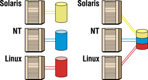
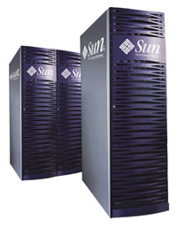
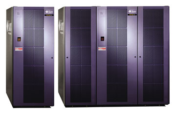

Андрей Борзенко
Рост объемов данных, расширение спектра задач, связанных с их обработкой, критичность доступа к данным для бизнеса приводят к необходимости говорить именно о системах хранения данных. Система хранения - нечто большее, чем просто набор дисков, подключенный к серверу. Сегодня это комплекс средств, предоставляющий высокоуровневый доступ к данным, обеспечивающий их постоянную готовность, защиту от сбоев и катастроф, мониторинг и управление использованием дискового пространства, автоматическое архивирование и прозрачное восстановление.
По мнению большинства экспертов, корпоративные системы хранения можно рассматривать как ресурс, стоящий в одном ряду с такими корпоративными ресурсами, как коммуникационная инфраструктура, аппаратные серверы уровня предприятия и прикладные программы. Для эффективного использования любого ресурса желательно, чтобы он мог быть консолидирован, - это обеспечивает целый ряд экономических преимуществ. Важнейшие из них - экономия на администрировании, возможность перераспределения резервов памяти, сокращение непроизводительных ИТ-затрат (например, на множество локальных решений для резервного копирования и последующую их эксплуатацию). Кроме того, консолидация памяти открывает путь к сокращению сроков разработки и внедрения систем.
Во многих компаниях информационные системы содержат несколько "островков" хранения данных, как правило, реализованных на отдельных машинах (рис. 1). Чтобы идти в ногу с требованиями заказчиков и достижениями конкурентов, бизнесу конкретной компании требуются мультиплатформные, масштабируемые базы данных, способные справиться с интенсивными выборками данных, их репликацией, ведением журнала и восстановлением данных. Обычно такие БД нельзя эффективно реализовать на основе изолированных систем хранения.
|  | Рис. 1. Раздельное и консолидированное хранение данных.
|
Объединив данные от нескольких серверов в единую, централизованную и масштабируемую систему хранения с очень высокой готовностью, можно упростить среду хранения и одновременно повысить скорость обработки данных и их доступности для пользователей. Кроме того, это даст экономию занимаемой площади, повышение уровня сервиса и снижение затрат на среду.
Потребность в консолидации
Консолидация систем хранения снижает совокупную стоимость владения (TCO), резко повышает эффективность как организации хранения данных, так и работы приложений, зависящих от подсистем хранения. Попробуем разобраться, что же такое консолидация систем хранения данных и в чем ее отличие от консолидации иных типов ресурсов центра данных. Обычно говорят о трех типах консолидации, относящихся соответственно к системам хранения, приложениям и серверам. В первом случае речь идет о совместном использовании централизованной системы хранения данных несколькими гетерогенными узлами (хостами), во втором - о размещении нескольких приложений на одном хосте, в третьем - о перемещении децентрализованных, но конгруэнтных приложений, распределенных по различным серверам компании, в единый кластер централизованных гомогенных серверов.
Вообще говоря, эти три типа консолидации обычно идут "рука об руку", но в данной статье мы рассмотрим вопросы консолидации именно систем хранения. Организация информационных хранилищ (Data Warehousing) сейчас стала очень важным способом повышения конкурентоспособности компаний, обрабатывающих аналитические и маркетинговые данные. Самый значимый параметр таких хранилищ - обеспечение мгновенного доступа к данным, поскольку сводные таблицы баз данных и индексы занимают намного больше места, чем сами детализированные данные, а более 90% запросов многомерны и включают тот или иной уровень агрегирования данных.
Поскольку современные центры данных выполняют весьма ответственные приложения, сегодня простои измеряются секундами, а издержки от простоев включают снижение дохода, упущенные возможности сбыта, потерю доверия клиентов. Чаще всего причиной простоя хранилища становятся системы хранения данных.
Среда современного бизнеса требует круглосуточной работы информационного центра с возможностью доступа в режиме реального времени, но такие центры исторически были рассчитаны на низкую загрузку днем и обновление систем по ночам. Обостряется и проблема резервирования для обеспечения защиты данных и поддержания целостности быстрорастущих баз данных.
Ведение бизнеса в Интернете также требует постоянной доступности и готовности используемых СУБД. Известно, что обычно размер СУБД удваивается каждый год, и эта проблема со временем будет только острее.
Типы консолидации систем хранения
В зависимости от обстоятельств и требований к ИС применяются различные схемы консолидации, но основных из них три.
Объединение систем хранения, находящихся на нескольких серверах, в пределах единого сервера. Эта модель упрощает администрирование и экономит занимаемое оборудованием пространство за счет централизации системы хранения на одном мощном сервере.
Непосредственное подключение нескольких разнородных серверов к единой системе хранения данных. Этот подход стал возможен в рамках гетерогенных систем хранения высокого класса, специально разработанных для информационных центров. В данном случае также упрощается администрирование и достигается экономия занимаемой оборудованием площади.
Объединение системы хранения на основе архитектуры SAN (сетей хранения данных). При таком подходе создается общий пул ресурсов хранения, включая коммутаторы, массивы, библиотеки на магнитных лентах и других типах накопителей, совместно используемых гетерогенными хостами. Эта модель улучшает эффективность и упрощает управление, повышая масштабируемость, готовность и доступность данных. SAN позволяет нескольким серверам иметь доступ к единому ресурсу хранения данных. NAS-устройства менее универсальны: они выполняют консолидирующую функцию только для одного класса ресурсов - файловых серверов. Впрочем, не стоит противопоставлять различные технологии, используемые для создания корпоративной системы хранения, - каждая из них хороша на своем месте. Так, для разделения файлов и предоставления больше подходит NAS, а для работы с СУБД - SAN. Часто они работают вместе, и в последнее время появились продукты, которые позволяют их интегрировать.
Актуальность консолидации
До прихода эры Интернета компаниям обычно приходилось искать компромисс между быстродействием и готовностью данных. Сегодняшние, основанные на сетях технологии хранения данных наконец делают консолидацию систем хранения практичной.
Выгоды стратегии консолидации становятся более очевидны, если бизнес компании использует Интернет. Традиционные методы распределенной системы хранения просто не работают при развертывании электронных инициатив. По мнению большинства экспертов, стратегия консолидированной системы хранения, основанная на современных передовых технологиях, приведет к значительному снижению затрат, совершенствованию контроля и управления, повышению эффективности и производительности, улучшению "подвижности" бизнеса и, что особенно важно, к повышению готовности, надежности и производительности.
Еще два года назад эти выгоды были недостижимы, но с появлением новейших технологий хранения данных многие компании, уже развернувшие консолидацию, сегодня могут в полной мере воспользоваться ее плодами.
Преимущества для бизнеса
Любая компания, независимо от ее размера, может столкнуться с такими неприятностями, как потеря данных (фактически потеря бизнеса), потеря доступа к данным (невозможность ведения бизнеса), рост числа "узких мест", вынужденное нарушение в предоставлении услуг. Объединить все корпоративные данные на единой платформе - это иногда то же самое, что положить все яйца в одну корзину: при утрате корзины теряются все яйца. Однако если такая "корзина" никогда не ломается и не отказывает, то яйца находятся в полной безопасности. Именно поэтому созданная инфраструктура системы хранения не должна иметь слабых мест, подвергающих критичные данные риску. Для устранения одиночных точек возможного отказа все аппаратные компоненты должны быть избыточными (иметь 100%-ное резервирование). Кроме того, все аппаратные компоненты должны удовлетворять спецификациям горячей установки и горячей замены; программно-аппаратные средства (firmware) должны предусматривать обновление без нарушения работоспособности системы (без ее перезагрузки или прерывания работы); данные в буферной памяти должны быть полностью защищены от любой вероятной катастрофы. Далее, все данные должны быть защищены от искажения, а сам центр также должен быть защищен от неожиданных катастроф. Если компания располагает всем этим, то консолидация не будет сопровождаться практически никаким риском.
Итак, посмотрим, что же можно ожидать от консолидации данных на одной общей платформе для хранения данных. Прежде всего емкость системы будет расти быстрее, этот процесс окажется рентабельнее, и управлять им можно будет оптимизированно. Будут устранены узкие места, компания повысит свою эффективность и производительность благодаря непрерывной высокой готовности, которая, в свою очередь, увеличит доходность, поддерживая конкурентоспособность. Благодаря автоматизации задач управления ИТ-специалисты компании будут освобождены для работы над другими проектами, более отвечающими их опыту. Можно будет достичь более высокого уровня эффективности эксплуатации при меньших капиталовложениях.
Отдельно стоит упомянуть о производительности. Объединение всех данных на общей платформе означает, что существует вероятность столкнуться с большим числом узких мест, если к этому заранее не подготовиться. В частности, запросы при анализе данных в информационном хранилище или совокупности хранилищ требуют очень высокой степени (более 90%) мгновенного онлайнового многомерного доступа. Большинство баз данных предлагают одномерные методы с ограниченным доступом к данным (индексы B-дерева), которые не могут полностью удовлетворить запросы анализа данных без полного или частичного сканировании базы данных. Это влечет за собой резкий рост числа дисковых операций ввода-вывода и может существенно снизить производительность. Поэтому при консолидации систем хранения вероятность уменьшения производительности - весьма реальный риск. Заказчики, которые намеревались лишь избежать проблем, связанных с простоями, часто наталкиваются на проблемы ограничения полосы ввода-вывода, что в действительности также является проблемой готовности, но на ином уровне. Рассмотрим эффект часового простоя, вызванного не отказом компонента, но перегрузкой системы. Корпорация теряет целый час деловых транзакций - и потенциальных заказчиков, которые пытались получить доступ к Web-сайту во время его бездействия. Вряд ли многие из них повторят эту попытку - скорее всего, они просто обратятся на сайт конкурирующей компании. Потери дохода, связанные с такими простоями, трудно оценить.
Должным образом реализованная консолидация системы хранения данных может обеспечить бизнесу повышение доходности за счет:
- улучшения уровней непрерывной работоспособности;
- сокращения времени восстановления после катастрофического отказа; ·
- уменьшения времени восстановления;
- более высокого качества обслуживания и повышения удовлетворенности заказчиков;
- значительного снижения объема инвестирования, требуемого для выполнения специфических задач;
- снижения сетевого трафика путем уменьшения числа репликаций системы;
- снижения затрат на приобретение, профилактику, обслуживание и поддержку;
- повышения эксплуатационной эффективности;
- повышения производительности труда работающего.
Планирование инфраструктуры
Для успешного ведения традиционного и нового электронного бизнеса компании, как правило, требуется соответствующая инфраструктура с возможностями восстановления после катастрофических разрушений, процедурами резервного копирования и восстановления, а также репликации данных вне центра. Если отказ электронных компонентов может вызвать остановку одного сервера, то наводнение, пожар, торнадо или землетрясение уже могут привести к остановке всего вычислительного центра, а неисправность единой энергосистемы - к отключению потребителей целого города.
Создавая инфраструктуру, обязательно следует внимательно рассматривать такие ее элементы, как собственно сеть, серверы и система хранения данных. Кроме того, следует учитывать требования рабочей нагрузки используемых приложений (производительность) и критичность данных (готовность).
Немаловажные факторы - отдача капиталовложений (ROI) и размеры издержек электронного бизнеса в сравнении с ростом доходов от повышения производительности и эффективности. Разумеется, реклама новых электронных услуг должна обеспечить отдачу, но коммерческий сайт компании, вероятно, станет своего рода мишенью. Первая проверка на прочность может иметь место со стороны пользователей, а за ней последуют иные. Поэтому инфраструктура системы хранения должна быть готовой справляться с растущими нагрузками.
Как отразится запуск новой системы на бизнес-данных корпорации? Не стоит удивляться, если объем данных будет расти экспоненциально. Современные базы данных требуют гибкой, недеструктивно масштабируемой инфраструктуры хранения данных. По мере построения БД сами данные накапливаются на большом числе различных платформ, разумеется, оставаясь важными для бизнеса компании и ценными для заказчиков, нуждающихся в быстром их обновлении без перебоев в обслуживании. Именно поэтому инфраструктура системы хранения данных корпорации потребует внедрения методов управления, свойственных большим вычислительным центрам.
После того как данные объединены в пределах централизованной среды, нужно защитить их от катастроф, искажений и ошибок, а для этого потребуется реализовать инфраструктуру хранения с возможностью резервирования и быстрого извлечения, удаленной репликации и быстрого восстановления после катастрофы.
Если речь идет о крупной корпорации, то, скорее всего, инвестиции в традиционные системы и базы данных уже давно сделаны. Эти унаследованные данные - ценный актив, который должен будет найти свое место в новой среде электронного бизнеса. Разумеется, унаследованные данные уже находятся в работе, поддерживая существующие бизнес-процессы, поэтому обычно ИТ-отдел стоит перед выбором - прервать нормальную обработку информации, чтобы дать возможность новым приложениям воспринять унаследованные данные, или задержать развитие новых приложений в ожидании момента, когда унаследованные данные станут доступны. Но такая проблема не стоит, если выбрать систему хранения данных, предназначенную для неразрушительной передачи данных между различными системами и обеспечивающую развитие и тестирование приложений, не сказываясь негативно на рабочем процессе.
Объединение усилийКомпании Sun Microsystems (http://www.sun.com), Hitachi (http://www.hitachi.com) и Hitachi Data Systems (http://www.hds.com) заключили соглашение о совместном продвижении широкого спектра усовершенствованных продуктов и услуг для исключительно требовательных корпоративных клиентов. Сотрудничество развивается по трем стратегическим направлениям. Sun Microsystems представляет на рынке семейство high-end систем хранения данных под названием Sun StorEdge 9900, включающее комплексы Hitachi Freedom Storage Lightning 9900. Эти системы разработаны с учетом всех требований классического вычислительного центра, сложность функционирования которого скрыта от пользователя. Системы поддерживают гетерогенность (в том числе возможность подсоединения мэйнфреймов), консолидацию накопителей данных и функции высокого уровня готовности. Продукты Sun StorEdge 9900 представляют собой развитие существующей линии продуктов Sun StorEdge, в которую, в частности, входят популярные массивы StorEdge T3. Исключительно важно и наличие сервисных центров, в которых работают специалисты обеих компаний и которые проводят обслуживание на месте эксплуатации этих систем хранения. Таким образом, клиенты в ответ на запрос могут получить оперативную помощь и сервисное обслуживание. Sun Microsystems и Hitachi Data Systems осуществляют взаимное лицензирование и совместное распространение поставляемых обеими компаниями основных программных продуктов для систем хранения данных. Это упрощает клиентам планирование и автоматизацию их корпоративных сетей данных. Партнеры намерены продолжить работу над программными продуктами для систем хранения данных, с тем чтобы обеспечить высокую совместимость между аппаратными системами хранения данных Sun/Hitachi. Кроме того, партнерское соглашение обеспечивает компании Hitachi и ее многочисленным отделениям доступ к разветвленной сети сбыта Sun, дополняющей сеть сбыта Hitachi.
|
Решения Sun
В начале нового тысячелетия руководство Sun Microsystems определило три основных направления усилий и инвестиций: высокая масштабируемость, непрерывные вычисления в режиме реального времени и модульная интеграция. Партнерство с Hitachi служит достижению этих целей и направлено на предоставление клиентам обеих компаний дополнительных преимуществ.
Sun StorEdge 9900 Series
Это решение для консолидации систем хранения в центрах данных, где требуется связность больших компьютеров, гетерогенность и высшие уровни готовности и производительности. В продуктах семейства Sun StorEdge 9900 (рис. 2) используется современная коммутируемая архитектура, обеспечивающая высокую устойчивость, производительность, масштабируемость и управляемость. Эта архитектура обеспечивает более широкую полосу пропускания и скорость ввода-вывода, чем старые монолитные архитектуры с фиксированной шиной, все еще используемые некоторыми поставщиками систем хранения данных. Семейство Sun StorEdge 9900 оптимизировано для работы в проверенной временем операционной среде Solaris Operating Environment и сертифицировано для конфигураций Sun Cluster 3.0. Это гарантирует, что данные системы удовлетворяют большинству требований корпораций к параметрам надежности и непрерывности работоспособности систем.
|  | Рис. 2. Системы Sun StorEdge 9900.
|
Емкость хранения каждой системы семейства Sun StorEdge 9960 может расширяться до 92,7 Тбайт; при этом можно использовать до 32 соединений с хостами в среде с непосредственно подключаемыми системами хранения (DAS) и до 4096 соединений в среде SAN. В результате каждая система может заменить множество одноцелевых систем хранения, работающих под управлением нескольких различных ОС. Возможность масштабирования в диапазоне от небольших рабочих групп до средних и крупных предприятий и сетевых центров обработки данных означает, что клиенты смогут в очень широких пределах наращивать объемы своих систем хранения данных по мере необходимости - без изменения приложений или ОС. К тому же существует возможность добавления ресурсов заданными порциями, "на лету". Используя кластеризацию систем Sun StorEdge 9900 в среде SAN, можно обеспечить фактически безграничное масштабирование для самых крупных корпоративных приложений.
Линия продуктов Sun StorEdge 9900 создана специально для обеспечения высокого уровня готовности и производительности в средах высокой гетерогенности. Приложения, работающие с этой линией продуктов, обеспечивают весьма высокий уровень доступности данных. Серверы и системы хранения данных Sun Microsystems, известные своей высокой надежностью, доступностью и простотой обслуживания (RAS - Reliability, Availability, Serviceability), получили новые преимущества класса high-end.
Sun StorEdge 6900
Семейство Sun StorEdge 6900 (рис. 3) представляет собой альтернативу для высокопроизводительной консолидации. Входящие в нее системы со встроенной виртуализацией оптимизированы для консолидации серверов и систем хранения данных в компаниях среднего размера и корпоративных центрах данных и сочетают простоту консолидации систем хранения с хорошо прогнозируемой структурой затрат.
|  | Рис. 3. Системы Sun StorEdge 6900.
|
Системы этой серии очень просто ввести в эксплуатацию, дальнейшее управление ими не вызывает затруднений. Sun StorEdge 6900 позволяет снизить общую стоимость владения благодаря оптимальному распределению нагрузки по дисковым массивам и возможности управления большим количеством систем хранения данных с помощью меньшего объема ресурсов. Встроенная машина виртуализации, снабженная простым и понятным интерфейсом, обеспечивает выделение достаточно мелких разделов LUN для различных хост-систем.
Системы Sun StorEdge 6900, разработанные для работы с интенсивными потоками информации, - это мультиплатформное решение SAN, оптимизированное по производительности сетей. Системы обладают встроенными сервисными функциями, они полностью интегрированы, протестированы и поддерживают непрерывную четкую работу. Решение StorEdge 6900 обеспечивает безопасное масштабирование по емкости (от сотен гигабайт до сотен терабайт), производительности, готовности и управляемости.
Партнерство с Hitachi расширило возможности Sun на рынке предварительно сконфигурированных, интегрированных и протестированных комплексов, сертифицированных для совместной работы. Для клиентов это означает возможность быстро внедрить законченное решение, разработанное специально для достижения высокого уровня доступности и производительности. Такое решение не только защищает инвестиции, но и обеспечивает масштабирование по мере появления новых потребностей, что, в свою очередь, повышает рентабельность вложений и снижает риски.
Программные решения
Пакет программ Sun StorEdge Resource Management Suite предназначен для анализа данных и выработки решений в проектах консолидации. Это ПО позволяет руководителям ИТ-служб централизовать и упростить администрирование и обслуживание инфраструктуры систем хранения данных, снизить совокупную стоимость владения (TCO), оптимизировать использование ресурсов, повысить готовность, задействуя при этом накопленный ранее опыт. StorEdge Resource Management Suite предоставляет основанную на Web инфраструктуру, изначально поддерживающую открытые системы.
Еще один пакет, Sun StorEdge Utilization Suite, обеспечивает управление файлами, интеллектуальные сервисы архивирования и восстановления. Он предоставляет средства защиты данных и быстрый доступ к большим объемам корпоративных онлайновых систем хранения. Пакет предусматривает копирование данных для одновременного считывания со многих распределенных устройств на скоростях, близких к максимальным. Utilization Suite автоматически создает резервные копии текущей работы и дуплицирует архивированные файлы и файловые системы на нескольких серверах. В случае незапланированного простоя предприятие может быстро вернуться к нормальной работе, что особенно значимо для такой отрасли, как финансы, где одна минута простоя может повлечь за собой убытки в миллионы долларов.
С помощью менеджера трафика Sun StorEdge Traffic Manager администраторы систем хранения могут выделить полосу по требованию, обеспечить динамическое выравнивание нагрузки в масштабах SAN и интегрированный маршрут восстановления. Таким образом, Traffic Manager повышает готовность и производительность при выполнении сервисов, основанных на работе с данными. Пакет оптимизирует производительность труда администратора систем хранения данных, поскольку предусматривает автоматическое управление характеристиками системы в пределах всей сети SAN.
Обеспечение круглосуточного доступа к данным без узких мест - очень сложная задача, но ее можно решить при наличии знаний и правильной технологии консолидации. Такая технология нужна компаниям для уменьшения совокупной стоимости владения; централизация информации может резко снизить издержки. Распределение информации между несколькими департаментами помогает сократить время выхода продуктов на рынок при одновременном повышении доходности. Компании, успешно использующие свою информацию, полностью отдают себе отчет в преимуществах, проистекающих из способности управлять данными, вот почему они остаются впереди своих конкурентов в сегодняшней быстро меняющейся рыночной среде.